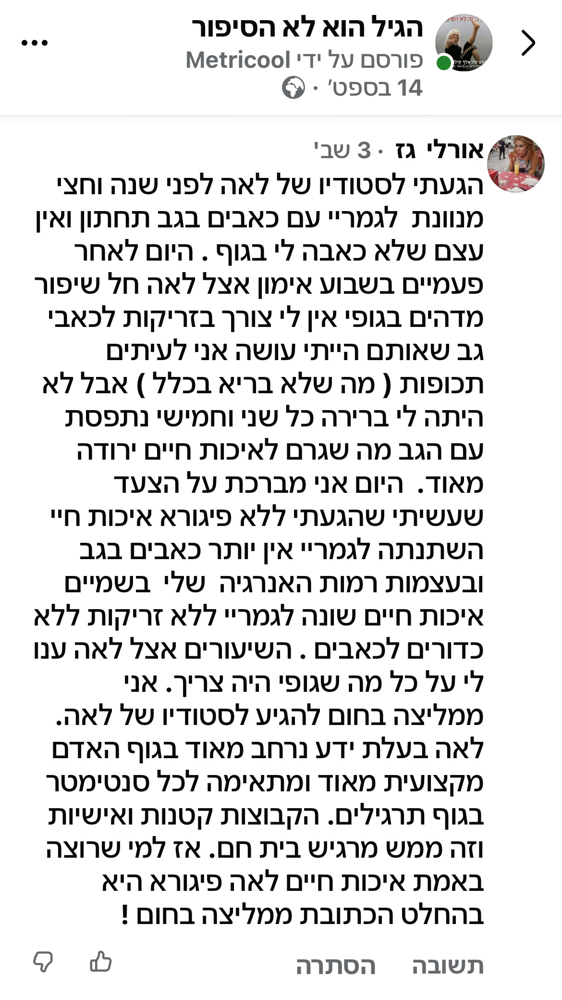
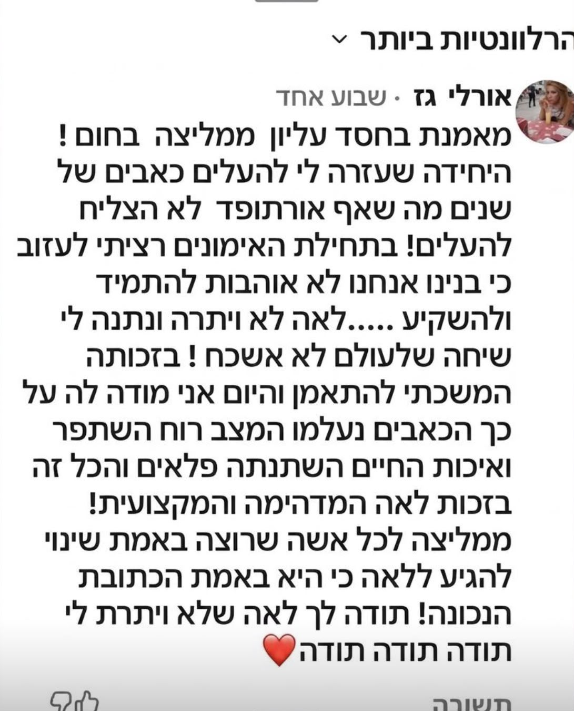
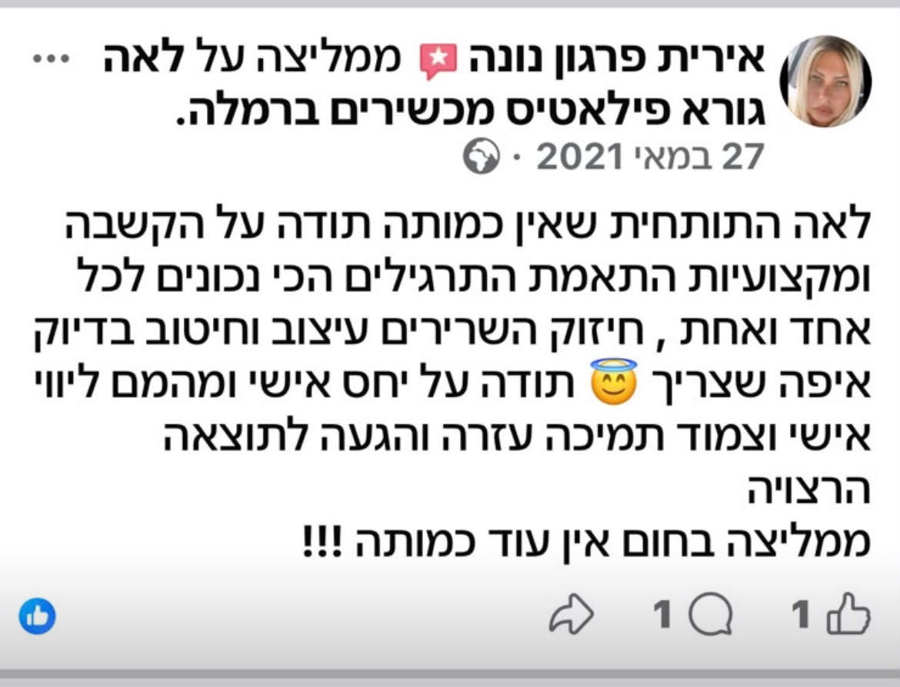
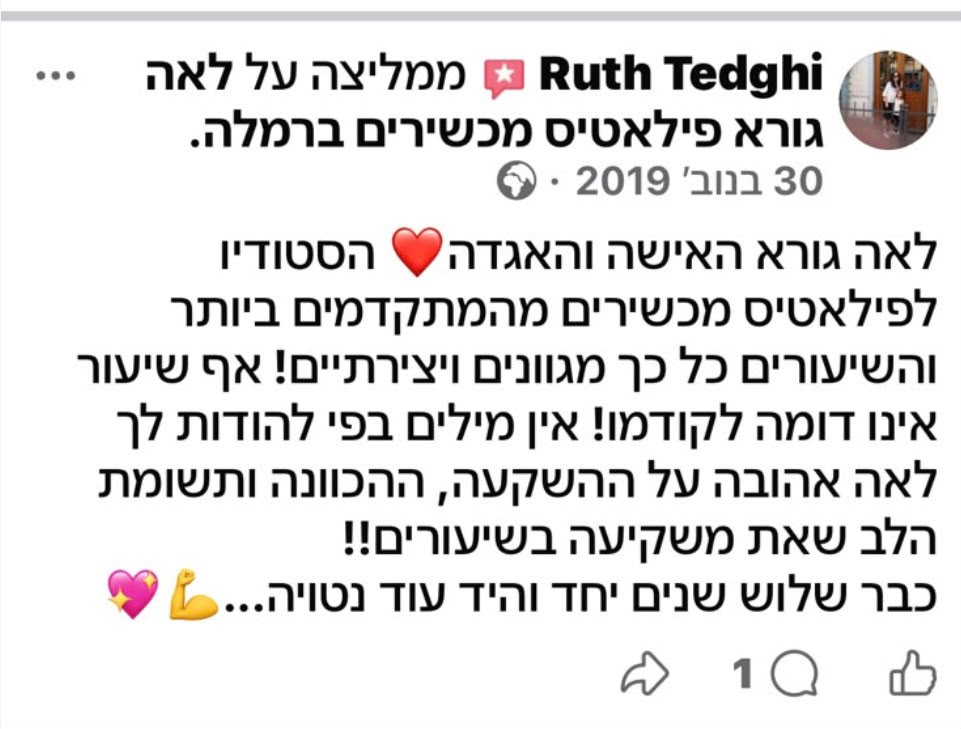
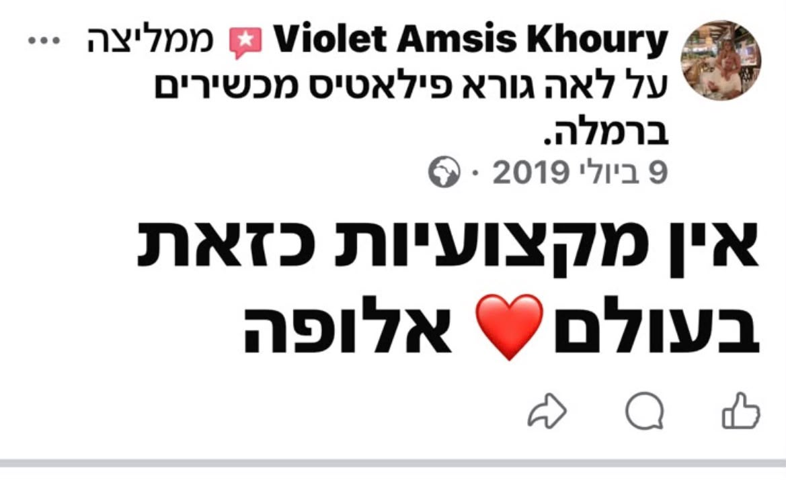
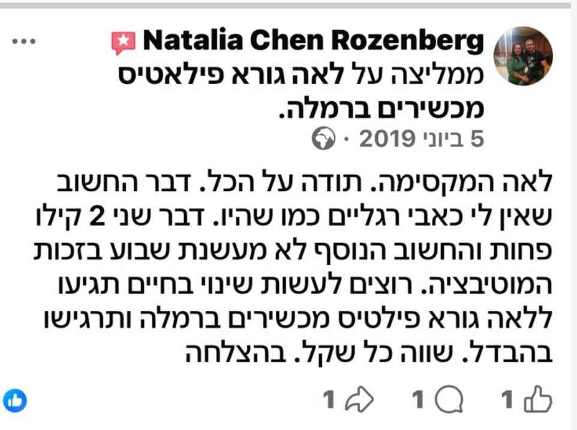
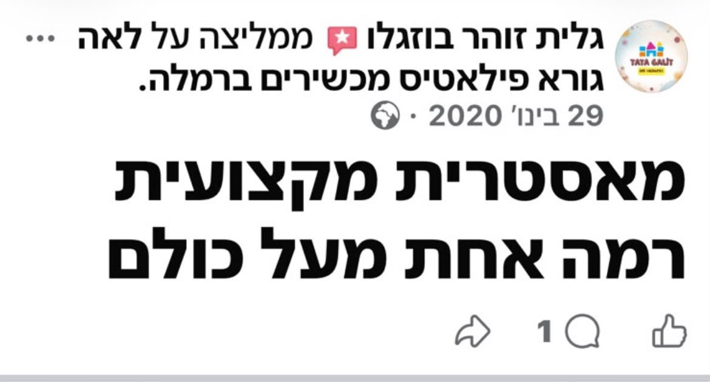
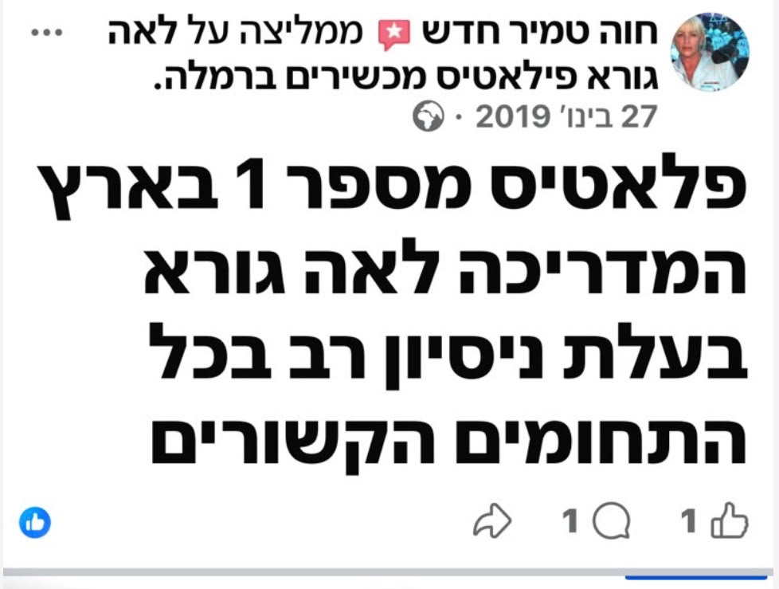
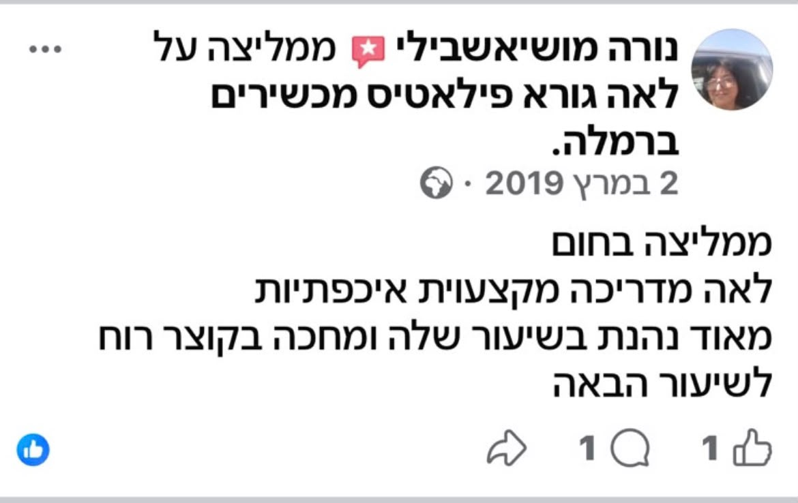

הגיל הוא לא הסיפור
בזום: יום חמישי 26.11, משעה 18:00 עד 19:30
ברמלה: יום שישי 27.11, משעה 10:30 עד 12:00
רחוב החבצלת 8
בזום: יום חמישי 26.11, משעה 18:00 עד 19:30
ברמלה: יום שישי 27.11, משעה 10:30 עד 12:00
רחוב החבצלת 8
הסדנה נפתחת בשתי קבוצות:
קבוצה 1 - מסלול זום
קבוצה 2 - מסלול פרונטלי, רחוב החבצלת 8 ברמלה

ספטמבר 2026








מה שהסדנה מבטיחה זו לא סיסמה. הסדנה נשענת בדיוק על מה שהמחקר המדעי מראה: יש קשר בין פעילות גופנית ותזונה לא דלקתית לבין מה שהגוף מסוגל לעשות, בכל גיל. בסדנה מוסיפים לזה אימון מנטלי, ומודדים את השינוי.
בתחילת הסדנה נבדוק מה הגוף שלך מסוגל לעשות היום.
הבדיקות ישמשו נקודת פתיחה, ויאפשרו לנו למדוד את ההתקדמות לאורך כל הסדנה.
בסיום הסדנה תוכלי להצטרף לקבוצת הבוגרות ולהמשיך לקבל ממני טיפים ועדכונים בוואטסאפ ובמייל, והזמנות להרצאות זום שעליהן אודיע. להרצאות תוכלי להזמין גם חברות ובני משפחה.
שמי לאה גורא. אני בת 72.
בגיל 45 עברתי ניתוח לב פתוח ואירוע מוחי, והייתי משותקת בחצי גוף. במבט לאחור, זאת הייתה המתנה הכי מאתגרת שקיבלתי. בזכותה צמחתי להיות מאמנת כושר, מאמנת פילאטיס שיקומי, ומנטורית לחוסן מנטלי. וזה לא קרה ביום אחד.
חזרתי הביתה אחרי ניתוח הלב והתחלתי לשקם את עצמי בלי שום תוכנית שיקום - רק מתוך הקשבה לגוף.
במקביל, גם סעדתי את בעלי, שהיה חולה ורתוק לכיסא גלגלים.
אלה היו החיים שלי במשך 30 שנה - חיים מלאי אתגרים ומשברים, ועל מנת להתגבר עליהם הייתי חייבת כל פעם מחדש להציב לעצמי מטרות מאתגרות, הרבה יותר מהמשברים שניקרו לי בדרך. בסופו של יום, כל משבר הפכתי לקרש קפיצה לאתגר הבא.
הם הביאו אותי לזכות בתואר מיס פיטנס ישראל לנשים 60+, לזכות בתחרויות חתירה ארציות, ולגלוש על גלים גם בסרילנקה ומרוקו.
עד היום אני מתאמנת בחדר כושר, בקליסטניקס, מאמנת ומתאמנת בפילאטיס מכשירים. גולשת גלים וחותרת על הסאפ. בתעודת הזהות אני בת 72, אבל הגוף שלי בן 42. אני עושה דברים שאנשים בגיל 42 אפילו לא עושים, וזה שומר גם על המוח צעיר, כי הוא מתמודד עם האתגרים של גוף צעיר.
ההישגים שלי הם לא הסיפור. הסיפור, הוא הבחירות שאני עשיתי לאורך כל הדרך - למרות הכול, ואף על פי כן, תמיד לקום, להסתכל קדימה, ולהתחיל בכל יום ומצב בריאותי את האתגר הבא.
הסדנה הזאת נולדה בשבילך:
לא. את מתחילה מהתחלה בקצב שלך, צעד אחרי צעד מהמקום שבו הגוף שלך נמצא היום.
אין הגבלת גיל. בכל גיל הסדנה שלנו יכולה לעזור לך להתקדם.
כל המפגשים מוקלטים, ואת יכולה לצפות בהם שוב בכל זמן שנוח לך. יש גם ליווי שבועי שלי בוואטסאפ בין המפגשים.
שני המסלולים כוללים בדיוק את אותו תוכן, רק בפורמט שונה: מסלול זום מתקיים ביום חמישי, 26.11.2026, בשעה 18:00. מסלול פרונטלי מתקיים ברחוב החבצלת 8 ברמלה, ביום שישי, 27.11.2026, בשעה 10:30. תבחרי את מה שמתאים לך.
מצלמה, מיקרופון, מחברת וכלי כתיבה, ומקום שקט. מקום שבו את מרגישה בנוח לדבר, להקשיב, ולהיות רגועה ולא בלחץ.
אין מגבלות בריאותיות שמונעות השתתפות.
בכל גיל, בכל מצב בריאותי אפשר להתחיל.
מהנקודה שבה את נמצאת היום.
התרגילים מותאמים ליכולת של כל אחת. במצב רפואי מיוחד, בתיאום עם הרופא שלך.
באמצעות כמה תרגילי תנועה ייעודיים, שבודקים מה הגוף שלך מסוגל לעשות היום.
עד 15 משתתפות בקבוצה.
כן. תקבלי את כל ההקלטות והחומרים מההתחלה.
כל התנאים, כולל ביטולים, הקלטות ובריאות, כתובים בתקנון הסדנה.
בסיום הסדנה תוכלי להצטרף לקבוצת הבוגרות ולהמשיך לקבל ממני טיפים ועדכונים בוואטסאפ ובמייל, והזמנות להרצאות זום שעליהן אודיע. להרצאות תוכלי להזמין גם חברות ובני משפחה.